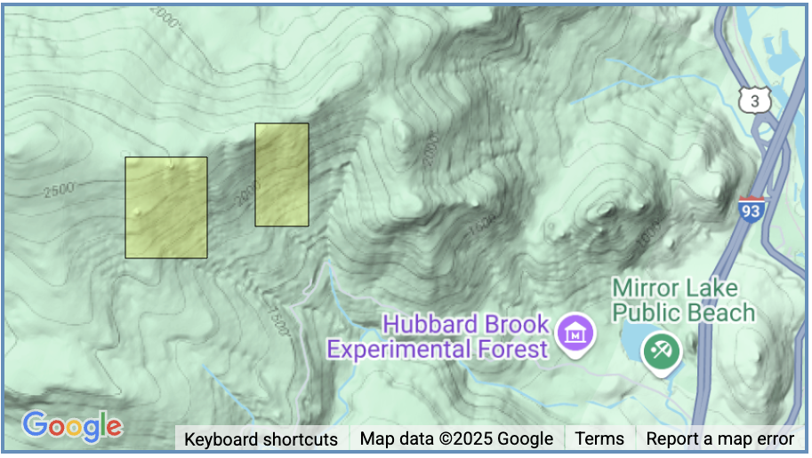
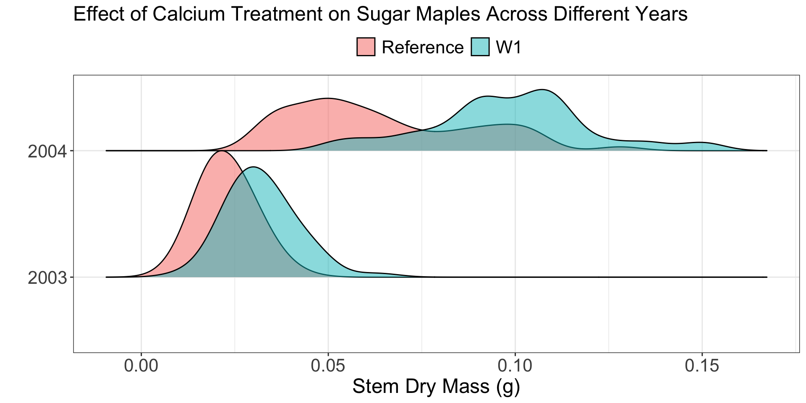
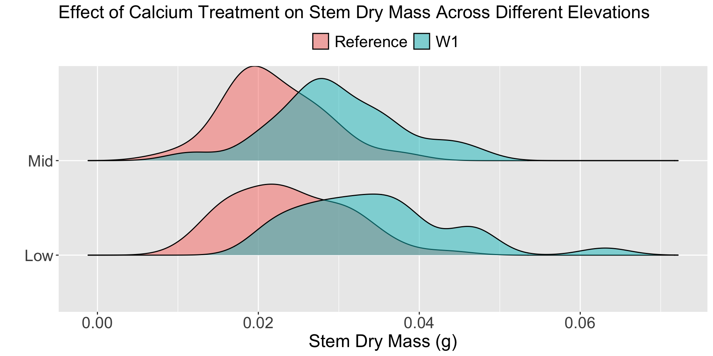

maple_lm <- lm(stem_dry_mass ~ watershed * year_cat,
data = hbr_maples_small)
anova(maple_lm)Week 10: Two-way ANOVA
Lab 8 Recap
Common Mistakes
Questions 1 & 2 – Your axis labels should contain units and indicate if your variables were transformed!
Question 4 – Each country has 12 observations! Is it reasonable to assume that these observations share no information?
Question 6 – Equal variance requires that there is no trend in the residuals versus fitted plot!
Question 15 – Both theory-based and simulation-based methods have conditions and the reliability of a p-value depends on those conditions.
Week 10
Wrapping Up Revisions
The final round of revisions on all assignments are due by Sunday, June 8.
One round of revisions
You will only have time for one round of revisions on Lab 8 and Statistical Critique 2, so make sure you feel confident about your revisions.
Final Project
- Feedback (from me) will be provided by Wednesday’s class
- Peer feedback on Wednesday
- Come with a poster outline!
Two-Way ANOVA Models
Two-way ANOVA
Goal:
Assess if multiple categorical variables have a relationship with the response.
HBR Maples
The hbr_maples dataset contains observations on sugar maple seedlings in untreated and calcium-amended watersheds at Hubbard Brook Experimental Forest in New Hampshire.
- Both watersheds are located on the south-facing slope (average slope angle 20-30%) of the Hubbard Brook valley.
- These watersheds were chosen to minimize differences in site characteristics between treatment and reference sites.
- In October 1999, 55 Mg of powdered and pelletized wollastonite (CaSi03) was applied by helicopter to W1, while no treatment was applied to the reference watershed.

Experimental Design
Sugar maple germinants were collected in early August 2003 (first-year germinants) and 2004 (second-year germinants) from randomly placed transects in the treated watershed (W1) and in the reference plots located adjacent to W1. In 2003, sampling was stratified by elevation, with 120 seedlings each collected from treated and reference areas in the low- and mid-elevation zones of the watersheds.
- What are the treatments?
- What are the experimental units? (i.e., to whom was the treatment applied?)
- Is there replication in this study?
- Is there pseudoreplication in this study?
- What confounding variables did the researchers attempt to control?
Two-Way ANOVA
There seem to be three “key” variables in this study:
- treatment (calcium, reference)
- elevation (low, medium)
- year of collection (2003, 2004)
Modeling Options
Additive Model
Each explanatory variable has a meaningful relationship with the response, conditional on the variable(s) included in the model.
Interaction Model
The relationship between one categorical explanatory variable and the response differs based on the values of another categorical variable.
Interaction Two-way ANOVA
Research Question
Does the relationship between mean stem dry mass and calcium treatment for sugar maples differ based on the year the seedling was sampled?
Or, because the study was an experiment…
Does the effect of calcium treatment on the stem dry mass of sugar maples differ based on the year the seedling was sampled?
What are we looking for?
Conditions
- Independence of observations
Observations are independent within groups and between groups
- Equal variability of the groups
The spread of the distributions are similar across groups
- Normality of the residuals / responses
The distribution of responses for each group is approximately normal
Theory-based Two-Way ANOVA
| term | Df | Sum Sq | Mean Sq | F value | Pr(>F) |
|---|---|---|---|---|---|
| watershed | 1 | 0.008754291 | 0.0087542912 | 38.54916 | 2.611570e-09 |
| year_cat | 1 | 0.111208014 | 0.1112080142 | 489.69993 | 5.665909e-58 |
| watershed:year_cat | 1 | 0.002586878 | 0.0025868782 | 11.39121 | 8.715303e-04 |
| Residuals | 221 | 0.050187819 | 0.0002270942 | NA | NA |
The watershed:year_cat line is testing if the relationship between the calcium treatment (watershed) and mean stem dry mass differs between 2003 and 2004.
Does it? Does that make sense?
How are those p-values calculated?
The p-values in the previous table use Type I sums of squares.
Type I sums of squares are “sequential,” meaning variables are tested in the order they are listed.
So, the p-value for watershed:year_cat is conditional on including watershed and year_cat as explanatory variables.
Is that what we want????
Testing “main effects”
If there is evidence of an interaction, we do not test if the main effects are “significant.”
Why?
The interactions depend on these variables, so they should be included in the model!
Interpreting “main effects”
When interaction effects are present, an interpretation of main effects is incomplete or misleading

Additive Two-way ANOVA
What if our analysis found no evidence of an interaction?
Why would there be no interaction with elevation?
For most of these measurements, sampling was stratified by elevation zone. There were three elevation zones designated within the northern hardwood-dominated forest in and adjacent to W1: low (500-550m), middle (550-600 m), and high (600-700 m).
- What role does
elevationplay in this experiment? - Should a blocking variable have an interaction with the treatment?
Tip
If there is a significant interaction between the block and the treatment, it means the treatment’s effect changes depending on the block. That would violate the basic idea of blocking: the block adds noise (i.e., shifts means up or down), but doesn’t interfere with how the treatment works.
Testing for a relationship for each variable
| term | Df | Sum Sq | Mean Sq | F value | Pr(>F) |
|---|---|---|---|---|---|
| elevation | 1 | 0.0004536649 | 4.536649e-04 | 8.654744 | 3.784000e-03 |
| watershed | 1 | 0.0032308041 | 3.230804e-03 | 61.635325 | 7.482954e-13 |
| Residuals | 149 | 0.0078102907 | 5.241806e-05 | NA | NA |
Do you think it matters which variable comes first?
Let’s see…
| term | Df | Sum Sq | Mean Sq | F value | Pr(>F) |
|---|---|---|---|---|---|
| watershed | 1 | 0.0031633603 | 3.163360e-03 | 60.348674 | 1.189679e-12 |
| elevation | 1 | 0.0005211087 | 5.211087e-04 | 9.941396 | 1.954556e-03 |
| Residuals | 149 | 0.0078102907 | 5.241806e-05 | NA | NA |
Did we get the same p-values as before?
Sequential Versus Partial Sums of Squares
Similar to before, the p-values in the ANOVA table use Type I (sequential) sums of squares.
- The p-value for each variable is conditional on the variable(s) that came before it.
- The p-value for
elevationis conditional onwatershedbeing included in the model. - The p-value for
watershedis conditional on…nothing.
If we want the p-value for each explanatory variable to be conditional on every variable included in the model, then we need to use a different type of sums of squares!
Partial Sums of Squares
Type III sums of squares are “partial,” meaning every term in the model is tested in light of the other terms in the model.
- The p-value for
elevationis conditional onwatershedbeing included in the model - The p-value for
watershedis conditional onelevationbeing included in the model
Only different for variables that were not first
We will get the same p-value for every variable that wasn’t first, since they were already conditional on the previous variables!
Getting the Conditional Tests for Every Variable
Load in the car package!
Additive Model Hypothesis Tests
| term | Sum Sq | Df | F value | Pr(>F) |
|---|---|---|---|---|
| (Intercept) | 0.0356004547 | 1 | 679.163929 | 2.289666e-57 |
| watershed | 0.0032308041 | 1 | 61.635325 | 7.482954e-13 |
| elevation | 0.0005211087 | 1 | 9.941396 | 1.954556e-03 |
| Residuals | 0.0078102907 | 149 | NA | NA |
What do you think the is the elevation line testing?
Is there a difference in the mean stem dry mass between low and high elevation, conditional on the watershed the seedling was grown in.
What would you decide?
Should a blocking variable have a “significant” effect?
In the previous ANOVA table, we saw that elevation had a “significant” effect on the mean stem dry mass.
Should a blocking variable have a “significant” effect on the response?
What happened if the blocking variable did not have a “significant” effect?
If the blocking variable is not “significant” should you delete it?
No!
Even “non-significant” variables explain some amount of the variation in the response. Which makes your estimates of a treatment effect more precise!
Work Session
Your Options
- Complete your revisions on Lab 8
- Complete your revisions on Statistical Critique 2
- Start moving your Final Project over to your poster